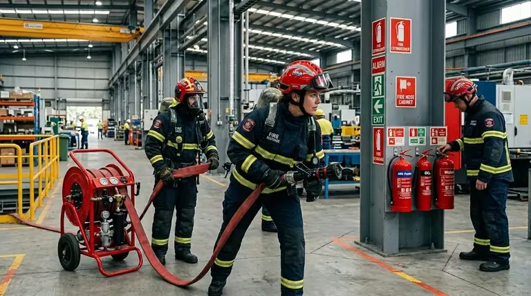

<!-- IMAGEN DESTACADA -->
<figure class="ol-art-figure">
<img src="/img/equipos-contra-incendios/proyectored/proyectored-servicios-proteccion-contra-incendios.avif" alt="Servicios de protección contra incendios de Proyecto Red: sistemas de supresión por agente limpio y CO2 para centros de datos y cuartos eléctricos" width="1200" height="675" loading="lazy" decoding="async">
<figcaption>Servicios de supresión especial de Proyecto Red: sistemas por agente limpio y CO₂ para centros de datos, cuartos eléctricos y de telecomunicaciones.</figcaption>
</figure>
<!-- INTRO -->
<p>Hay cuartos donde apagar el fuego con agua sale casi tan caro como dejarlo arder. Un site donde cada rack vale una fortuna y guarda datos que no se recuperan. Un cuarto eléctrico de media tensión. Un MDF de telecom. Una sala de control de proceso. En todos ellos un rociador haría su trabajo —controlar el fuego— pero al precio de freír la electrónica y dejarte la operación parada por semanas. El agua aquí no es la solución: es parte del problema.</p>
<p>Para estos casos existe otra familia: los <strong>sistemas de supresión por inundación total</strong>. Llenan el volumen del cuarto con un gas que extingue el fuego sin dejar residuo conductor ni una gota de humedad. Los principales son los <strong>agentes limpios</strong> —FM-200/HFC-227ea, Novec 1230, inergén y otros gases inertes— bajo <span class="ol-art-norm-badge">NFPA 2001</span>, y el <strong>dióxido de carbono (CO₂)</strong> bajo <span class="ol-art-norm-badge">NFPA 12</span>.</p>
<p>En <strong>Proyecto Red</strong>, integrador mexicano de sistemas PCI con base en CDMX y proyectos en todo el país, esto es de lo más especializado que hacemos: cálculo de concentración, prueba de integridad del recinto, integración con detección cruzada y un diseño de seguridad de personas que no admite atajos. Aquí vas a ver cada agente, cuándo conviene cada uno y cómo se arma el sistema completo de principio a fin.</p>
<!-- 1 -->
<h2 id="s1">1. Por qué el agua no siempre es la respuesta</h2>
<p>Que quede claro: los rociadores son la columna vertebral de la protección contra incendios y resuelven la enorme mayoría de los riesgos de un edificio. No estamos en contra del agua. Pero si proteges un site o un cuarto eléctrico, el agua te enfrenta a tres problemas que no tienen vuelta atrás:</p>
<ul>
<li><strong>Daño al equipo:</strong> la electrónica, los servidores y los tableros energizados quedan inservibles al contacto con agua, aunque el fuego haya sido pequeño.</li>
<li><strong>Conductividad:</strong> el agua sobre equipo energizado es un riesgo eléctrico para el personal y puede propagar fallas.</li>
<li><strong>Tiempo de recuperación:</strong> tras una descarga de agua, el secado, la limpieza y la recertificación del equipo detienen la operación por mucho más tiempo que el incendio mismo.</li>
</ul>
<p>La supresión por gas resuelve los tres de un golpe: extingue rápido, no deja residuo y, una vez ventilado el cuarto, vuelves a operar. Para una operación que no se puede dar el lujo de parar, esa es toda la diferencia.</p>
<blockquote>En un centro de datos, el objetivo no es solo apagar el fuego: es apagarlo sin destruir lo que el fuego todavía no alcanzó. Ahí es donde el agente limpio reemplaza al agua.</blockquote>
<!-- 2 -->
<h2 id="s2">2. Cómo extingue un agente limpio</h2>
<p>No todos los agentes apagan el fuego de la misma forma, y eso no es un detalle de manual: define cuánta concentración necesitas y cómo dimensionas la descarga. Hay dos mecanismos según la naturaleza del agente.</p>
<ul class="ol-checklist">
<li><strong>Agentes halocarbonados (FM-200, Novec 1230):</strong> extinguen principalmente por absorción de calor — interrumpen la reacción de combustión al enfriar la flama por debajo del umbral de sostenimiento.</li>
<li><strong>Gases inertes (inergén, argón, nitrógeno):</strong> extinguen por reducción del oxígeno — desplazan el aire hasta bajar la concentración de O₂ por debajo del nivel que sostiene la combustión, sin volverlo irrespirable de inmediato para una salida segura.</li>
<li><strong>CO₂:</strong> extingue por dilución de oxígeno y enfriamiento, pero alcanza concentraciones letales — solo apto para espacios normalmente no ocupados.</li>
</ul>
<!-- 3 -->
<figure class="ol-art-featured inline">
<picture>
<source srcset="../../img/equipos-contra-incendios/bomberos-entrenamiento-rescate-03.avif" type="image/avif">
<img src="../../img/equipos-contra-incendios/bomberos-entrenamiento-rescate-03.webp" alt="Entrenamiento de brigada contra incendios con equipo de protección profesional" loading="lazy" decoding="async" width="768" height="429">
</picture>
<figcaption class="ol-art-featured-caption">Entrenamiento de brigada contra incendios con equipo profesional.</figcaption>
</figure>
<h2 id="s3">3. Comparativa de agentes de supresión</h2>
<p>Aquí se toma la decisión de ingeniería más importante del proyecto: qué agente. La respuesta depende de tu espacio, de si hay gente dentro, de restricciones ambientales y de lo que pida tu aseguradora. No hay un "mejor" universal; hay un mejor para tu caso. Esta tabla pone las cartas sobre la mesa.</p>
<table class="ol-art-spec-table" role="table">
<thead>
<tr>
<th scope="col">Agente</th>
<th scope="col">Tipo</th>
<th scope="col">Norma</th>
<th scope="col">Apto con personas</th>
<th scope="col">Aplicación típica</th>
</tr>
</thead>
<tbody>
<tr>
<td>FM-200 (HFC-227ea)</td>
<td>Halocarbonado</td>
<td>NFPA 2001</td>
<td>Sí (concentración de diseño)</td>
<td>CPD, telecom, archivos</td>
</tr>
<tr>
<td>Novec 1230</td>
<td>Cetona fluorada</td>
<td>NFPA 2001</td>
<td>Sí (amplio margen de seguridad)</td>
<td>CPD, museos, cuartos eléctricos</td>
</tr>
<tr>
<td>Inergén (IG-541)</td>
<td>Gas inerte (N₂/Ar/CO₂)</td>
<td>NFPA 2001</td>
<td>Sí (mantiene O₂ respirable)</td>
<td>CPD grandes, salas de control</td>
</tr>
<tr>
<td>Argón / Nitrógeno (IG-01/IG-100)</td>
<td>Gas inerte</td>
<td>NFPA 2001</td>
<td>Sí</td>
<td>Recintos con restricción ambiental</td>
</tr>
<tr>
<td>CO₂ (dióxido de carbono)</td>
<td>Gas inerte asfixiante</td>
<td>NFPA 12</td>
<td>No — letal en concentración de diseño</td>
<td>Espacios no ocupados, aplicación local</td>
</tr>
</tbody>
</table>
<div class="ol-art-warn">
<strong>⚠ Seguridad ante todo:</strong> el CO₂ apaga a concentraciones que matan a una persona. No es una advertencia teórica: ha habido muertos en cuartos con CO₂ mal protegidos. Por eso la <span class="ol-art-norm-badge">NFPA 12</span> exige alarma predescarga, retardo, señalización, vías de evacuación libres y, en muchos casos, aborto manual. Jamás se diseña CO₂ para un espacio normalmente ocupado sin esos controles. Cuando la aplicación lo permite, priorizamos agentes limpios respirables.
</div>
<!-- 4 -->
<h2 id="s4">4. Agentes limpios en detalle (NFPA 2001)</h2>
<h3>4.1 FM-200 (HFC-227ea)</h3>
<p>El caballo de batalla del sector durante décadas. Se guarda licuado a presión, descarga en menos de 10 segundos y apaga enfriando la flama. Su gran ventaja: ocupa poco espacio de cilindros, así que cabe bien en cuartos chicos donde no sobra metro cuadrado. Su punto débil es ambiental —su potencial de calentamiento global es alto—, y justo eso empujó el desarrollo de las alternativas que vienen abajo.</p>
<h3>4.2 Novec 1230</h3>
<p>Una cetona fluorada con un margen de seguridad enorme entre la concentración de diseño y el nivel de efecto adverso para personas (NOAEL). Su potencial de calentamiento global ronda 1 y su vida atmosférica es de días, no de siglos. Se almacena como líquido y se vaporiza al descargar. Si hoy diseñas un site nuevo y te importan la sostenibilidad y la seguridad de quien trabaja dentro, suele ser el agente que recomendamos.</p>
<h3>4.3 Inergén y gases inertes</h3>
<p>El inergén (IG-541) es una mezcla de nitrógeno, argón y CO₂ que apaga bajando el oxígeno justo a un nivel que el fuego ya no sostiene, pero que tú sí puedes respirar para salir. Como son gases que ya están en el aire, su impacto ambiental es prácticamente nulo. El costo de esa elegancia: necesita muchos más cilindros de alta presión, y eso obliga a destinar un cuarto de agente dedicado. En un site grande con operadores permanentes, ese metraje vale la pena.</p>
<!-- 5 -->
<h2 id="s5">5. Sistemas de CO₂ (NFPA 12)</h2>
<p>A pesar de su riesgo para las personas, el CO₂ sigue ganando en ciertos riesgos específicos —donde no hay gente y donde el costo del agente importa—, siempre bajo los controles férreos de la <span class="ol-art-norm-badge">NFPA 12</span>. Se monta en dos configuraciones:</p>
<ul class="ol-checklist">
<li><strong>Inundación total:</strong> el CO₂ llena un recinto cerrado normalmente no ocupado (cuartos de turbinas, bodegas de líquidos, hornos).</li>
<li><strong>Aplicación local:</strong> descarga dirigida sobre un riesgo específico (un equipo, un baño de inmersión, una prensa) sin cerrar el recinto.</li>
<li><strong>Almacenamiento de alta o baja presión:</strong> cilindros a alta presión para sistemas pequeños, o tanque refrigerado a baja presión para grandes volúmenes.</li>
<li><strong>Controles de seguridad obligatorios:</strong> alarma predescarga, retardo de tiempo, señalización lumínica y acústica, paro de ventilación y aborto manual.</li>
</ul>
<!-- 6 -->
<h2 id="s6">6. Cálculo de concentración y cantidad de agente</h2>
<p>Aquí no se improvisa. Todo el sistema parte de dos datos: el volumen neto del recinto y la concentración de diseño del agente, ajustada por la temperatura mínima que esperas en ese cuarto. La <span class="ol-art-norm-badge">NFPA 2001</span> da el método. Para halocarbonados, la masa de agente sale de esta fórmula:</p>
<div class="ol-calc-box">
<strong>Masa de agente para inundación total (halocarbonado):</strong>
W = (V / s) × (C / (100 − C))
Donde:
W = peso de agente (kg)
V = volumen neto del recinto (m³)
s = volumen específico del vapor a la temperatura mínima (m³/kg)
C = concentración de diseño (% volumen)
La concentración de diseño = concentración de extinción × factor de seguridad
</div>
<p>De ese número sale todo lo demás: cuántos cilindros instalas y cómo dimensionas la tubería y las boquillas para que el agente llegue parejo a todo el volumen en el tiempo normado —típicamente 10 segundos o menos en halocarbonados—. Si el cálculo está mal, o sobra agente caro, o falta y el fuego sobrevive.</p>
<!-- 7 -->
<h2 id="s7">7. Hermeticidad del recinto y prueba de integridad</h2>
<p>Este es el punto donde más sistemas caros se vuelven inútiles. Un agente gaseoso solo apaga si el cuarto retiene la concentración el tiempo de retención requerido —típicamente 10 minutos—. Si hay un hueco bajo la puerta, un pasamuros sin sellar o un ducto abierto, el gas se va y el fuego se queda. Puedes tener los cilindros perfectamente cargados y aun así fallar.</p>
<p>Por eso la <span class="ol-art-norm-badge">NFPA 2001</span> obliga a hacer la <strong>prueba de integridad de recinto (Door Fan Test)</strong>: se presuriza el cuarto con un ventilador calibrado y se mide cuánto fuga, para predecir cuánto tiempo aguantará el agente dentro. La incluimos en la puesta en marcha y entregamos el resultado por escrito — porque sellar el cuarto es tan importante como elegir el agente.</p>
<div class="ol-art-warn">
<strong>⚠ Error frecuente en campo:</strong> montar un sistema de agente limpio en un cuarto con fugas que nadie selló. El día del incendio el sistema descarga perfecto, el agente se disipa en segundos por los huecos, y el fuego sigue ahí. Gastaste en cilindros para nada. Sellar pasamuros, hacer el Door Fan y poner dampers que cierren el HVAC pesan tanto como el agente que compraste.
</div>
<!-- 8 -->
<h2 id="s8">8. Integración con detección y secuencia de descarga</h2>
<p>Un sistema de gas no se dispara por las dudas. Cada descarga cuesta una recarga y mete riesgo para la gente que esté dentro, así que la liberación se condiciona a una <strong>detección cruzada</strong> —no un detector, dos— y a una secuencia ordenada que gobierna el panel de detección. Así corre, paso a paso:</p>
<div class="ol-phase-block">
<div class="ol-phase-num">1</div>
<div class="ol-phase-body">
<h4>Primera detección (alerta)</h4>
<p>Un detector en alarma genera pre-señal: alerta en panel, notificación local y aviso a monitoreo. Aún no hay descarga.</p>
</div>
</div>
<div class="ol-phase-block">
<div class="ol-phase-num">2</div>
<div class="ol-phase-body">
<h4>Detección cruzada (confirmación)</h4>
<p>Un segundo detector independiente confirma el evento. Se inicia la secuencia de descarga: alarma predescarga audible y visible, paro de HVAC y cierre de dampers.</p>
</div>
</div>
<div class="ol-phase-block">
<div class="ol-phase-num">3</div>
<div class="ol-phase-body">
<h4>Retardo y aborto</h4>
<p>Conteo regresivo (típicamente 30 s) durante el cual el personal evacua y puede activar el aborto manual si se trata de una falsa alarma. La señalización indica claramente la inminencia de descarga.</p>
</div>
</div>
<div class="ol-phase-block">
<div class="ol-phase-num">4</div>
<div class="ol-phase-body">
<h4>Descarga y retención</h4>
<p>Si no hay aborto, los cilindros liberan el agente por la red de boquillas, alcanzando la concentración de diseño en el tiempo normado. El recinto sellado mantiene la concentración durante el tiempo de retención.</p>
</div>
</div>
<p>Toda esta lógica depende de un sistema de detección bien diseñado. Si quieres entender a fondo cómo se construye esa base, consulta nuestra guía de <a href="/blog/sistemas-deteccion-alarma-incendio-nfpa-72-proyecto-red/">sistemas de detección y alarma de incendio NFPA 72</a>.</p>
<!-- CTA INLINE -->
<div class="ol-art-cta-inline">
<p>¿Tu centro de datos, cuarto eléctrico o sala de telecom necesita supresión por agente limpio o CO₂ diseñada bajo NFPA? Conoce el trabajo de Proyecto Red como integrador PCI.</p>
<a href="/portafolio/equipos-contra-incendios/proyectored/" class="ol-btn-primary" style="--case-accent: #7F1D1D;;--case-accent-ink:#FFFFFF">Ver caso Proyecto Red →</a>
</div>
<!-- 9 -->
<h2 id="s9">9. Espacios típicos y su solución de supresión</h2>
<p>Cada cuarto crítico pide su propio agente y su propia configuración; lo que va perfecto en un site no necesariamente sirve para una bodega de turbinas. Estos son los casos que más vemos en campo y lo que recomendamos para cada uno:</p>
<table class="ol-art-spec-table" role="table">
<thead>
<tr>
<th scope="col">Espacio</th>
<th scope="col">Riesgo principal</th>
<th scope="col">Agente recomendado</th>
<th scope="col">Consideración clave</th>
</tr>
</thead>
<tbody>
<tr>
<td>Centro de datos / CPD</td>
<td>Fuego eléctrico en servidores</td>
<td>Novec 1230 / inergén</td>
<td>Detección por aspiración + piso técnico sellado</td>
</tr>
<tr>
<td>Cuarto eléctrico / tableros</td>
<td>Arco eléctrico, sobrecarga</td>
<td>FM-200 / Novec 1230</td>
<td>Coordinación con paro de energía</td>
</tr>
<tr>
<td>Sala de telecomunicaciones / MDF</td>
<td>Fuego en equipo activo</td>
<td>Novec 1230 / FM-200</td>
<td>Tiempo de retención y sellado de charolas</td>
</tr>
<tr>
<td>Sala de control de proceso</td>
<td>Electrónica crítica</td>
<td>Inergén (respirable)</td>
<td>Seguridad del operador permanente</td>
</tr>
<tr>
<td>Bodega de líquidos / turbinas</td>
<td>Líquido inflamable / maquinaria</td>
<td>CO₂ (no ocupado)</td>
<td>Controles de seguridad NFPA 12</td>
</tr>
<tr>
<td>Archivo / museo</td>
<td>Material irreemplazable</td>
<td>Novec 1230</td>
<td>Cero residuo sobre documentos/obras</td>
</tr>
</tbody>
</table>
<!-- 10 -->
<h2 id="s10">10. Componentes de un sistema de supresión gaseosa</h2>
<p>El agente es solo el protagonista; detrás hay un reparto completo que tiene que funcionar a la primera. Estos son los componentes, todos con listado UL/FM:</p>
<ul class="ol-checklist">
<li><strong>Cilindros de agente:</strong> contenedores presurizados con válvula de descarga y manómetro supervisado.</li>
<li><strong>Actuadores:</strong> solenoide eléctrico, neumático o manual para liberar el agente.</li>
<li><strong>Red de tubería y boquillas:</strong> dimensionada por cálculo de flujo para distribución uniforme del agente.</li>
<li><strong>Panel de liberación:</strong> unidad de control dedicada con lógica de detección cruzada, retardo y aborto.</li>
<li><strong>Detección:</strong> detectores de humo de alta sensibilidad o aspiración en doble interconexión.</li>
<li><strong>Notificación y señalización:</strong> alarmas predescarga, letreros de "no entrar / agente descargado" y estrobos.</li>
<li><strong>Dampers y paro de HVAC:</strong> cierre automático para mantener la hermeticidad del recinto.</li>
</ul>
<!-- 11 -->
<h2 id="s11">11. Pruebas, recarga y mantenimiento</h2>
<p>Un sistema de supresión por gas trabaja para un solo momento, y nunca sabes cuándo llega. No tiene segunda oportunidad: o está listo, o no sirvió de nada. Por eso su mantenimiento exige disciplina durante toda la vida útil:</p>
<div class="ol-phase-block">
<div class="ol-phase-num">1</div>
<div class="ol-phase-body">
<h4>Pesaje y presión de cilindros</h4>
<p>Verificación periódica del peso del agente y la presión de presurización. Una pérdida superior al umbral normado obliga a recargar el cilindro.</p>
</div>
</div>
<div class="ol-phase-block">
<div class="ol-phase-num">2</div>
<div class="ol-phase-body">
<h4>Prueba funcional sin descarga</h4>
<p>Prueba de la cadena de detección, secuencia de retardo, aborto y actuadores sin liberar el agente, verificando toda la lógica de operación.</p>
</div>
</div>
<div class="ol-phase-block">
<div class="ol-phase-num">3</div>
<div class="ol-phase-body">
<h4>Prueba de integridad de recinto</h4>
<p>Repetición periódica del Door Fan Test, especialmente tras cualquier remodelación que pueda haber comprometido la hermeticidad.</p>
</div>
</div>
<div class="ol-phase-block">
<div class="ol-phase-num">4</div>
<div class="ol-phase-body">
<h4>Recarga post-descarga</h4>
<p>Tras una descarga real o de prueba, recarga de cilindros con agente certificado y restablecimiento completo del sistema.</p>
</div>
</div>
<!-- 12 -->
<h2 id="faq">Preguntas frecuentes</h2>
<h3>¿Cuál es el mejor agente limpio para un centro de datos?</h3>
<p>Para un CPD nuevo, el Novec 1230 suele ganar por su amplio margen de seguridad para personas y su potencial de calentamiento global cercano a 1. El FM-200 sigue siendo válido y ocupa pocos cilindros. En sites grandes con operadores permanentes, el inergén (IG-541) conviene porque deja el oxígeno respirable. La elección final depende del volumen, la ocupación y el espacio para cilindros.</p>
<h3>¿Es seguro un sistema de agente limpio con personas dentro?</h3>
<p>Sí. Los agentes limpios bajo <span class="ol-art-norm-badge">NFPA 2001</span> —FM-200, Novec 1230, inergén— se diseñan a una concentración por debajo del nivel de efecto adverso para personas y permiten salir con seguridad. El CO₂ es la excepción: apaga a concentraciones letales y solo se usa en espacios normalmente no ocupados, con los controles que exige la <span class="ol-art-norm-badge">NFPA 12</span>.</p>
<h3>¿Por qué se necesita la prueba de integridad de recinto (Door Fan Test)?</h3>
<p>Porque un gas solo extingue si el cuarto retiene la concentración el tiempo de retención requerido, típicamente 10 minutos. Si hay fugas bajo puertas, pasamuros sin sellar o ductos abiertos, el agente se escapa en segundos y el sistema falla aunque esté bien cargado. El Door Fan Test presuriza el recinto y mide la fuga para predecir esa retención.</p>
<h3>¿En cuánto tiempo descarga un sistema de agente limpio?</h3>
<p>Los halocarbonados como FM-200 y Novec 1230 alcanzan la concentración de diseño en 10 segundos o menos, según la <span class="ol-art-norm-badge">NFPA 2001</span>. Los gases inertes como el inergén tardan algo más por su forma de extinguir. Antes de la descarga corre una secuencia con detección cruzada, alarma predescarga y un retardo con aborto manual.</p>
<h3>¿Por qué no usar rociadores en un cuarto eléctrico o telecom?</h3>
<p>El agua sobre equipo energizado es un riesgo eléctrico y deja la electrónica inservible aunque el fuego haya sido pequeño. Después vienen el secado, la limpieza y la recertificación, que paran la operación mucho más tiempo que el propio incendio. Un agente limpio apaga rápido, no deja residuo conductor y te permite reanudar al ventilar el recinto.</p>
<!-- 12 -->
<h2 id="s12">12. ¿Por qué elegir a Proyecto Red?</h2>
<p>La supresión por gas es la disciplina más exigente de toda la protección contra incendios: junta cálculo de concentración, ingeniería de recinto, integración con detección y un diseño de seguridad de personas que no perdona errores. La abordamos como <strong>integrador</strong>, no como quien te vende cilindros y se va. Operamos desde la Ciudad de México con proyectos en todo el país.</p>
<ul class="ol-checklist">
<li><strong>Ingeniería de concentración:</strong> cálculo de agente bajo NFPA 2001/12 ajustado al volumen y temperatura reales.</li>
<li><strong>Selección de agente:</strong> recomendación del agente óptimo según espacio, ocupación y restricciones ambientales.</li>
<li><strong>Prueba de integridad:</strong> Door Fan Test y sellado de recinto incluidos en la puesta en marcha.</li>
<li><strong>Integración con detección:</strong> lógica de detección cruzada, retardo y aborto coordinada con el panel NFPA 72.</li>
<li><strong>Seguridad de personas:</strong> diseño con alarmas predescarga, señalización y vías de evacuación verificadas.</li>
<li><strong>Mantenimiento y recarga:</strong> programa de pesaje, prueba funcional y recarga con agente certificado.</li>
</ul>
<div class="ol-art-contact-card">
<h3>Contacto Proyecto Red — Supresión por Agentes Limpios y CO₂</h3>
<div class="ol-art-contact-grid">
<div class="ol-art-contact-item">
<strong>Sitio web</strong>
<a href="https://proyectored.mx" target="_blank" rel="noopener">proyectored.mx</a>
</div>
<div class="ol-art-contact-item">
<strong>Teléfono</strong>
<a href="tel:+525547868402">+52 55 4786 8402</a>
</div>
<div class="ol-art-contact-item">
<strong>Servicios</strong>
<span>Diseño · Instalación · Prueba de integridad · Mantenimiento y recarga</span>
</div>
<div class="ol-art-contact-item">
<strong>Cobertura</strong>
<span>Ciudad de México y Estado de México</span>
</div>
<div class="ol-art-contact-item">
<strong>Normas que cubre</strong>
<span>NFPA 2001 · 12 · 72 · 13 · 25 · NOM-002-STPS</span>
</div>
</div>
</div>
<!-- COMPARTIR -->
<div class="ol-art-share">
<span class="ol-art-share-label">Compartir:</span>
<a href="https://twitter.com/intent/tweet?url=https://origenlab.com/blog/supresion-agentes-limpios-co2-centros-datos-proyecto-red/&text=Supresión+por+agentes+limpios+y+CO2+para+centros+de+datos" target="_blank" rel="noopener" class="ol-art-share-btn" aria-label="Compartir en Twitter/X">𝕏</a>
<a href="https://www.linkedin.com/shareArticle?mini=true&url=https://origenlab.com/blog/supresion-agentes-limpios-co2-centros-datos-proyecto-red/" target="_blank" rel="noopener" class="ol-art-share-btn" aria-label="Compartir en LinkedIn">in</a>
<a href="https://wa.me/?text=Supresión+por+agentes+limpios+y+CO2+para+centros+de+datos+https://origenlab.com/blog/supresion-agentes-limpios-co2-centros-datos-proyecto-red/" target="_blank" rel="noopener" class="ol-art-share-btn" aria-label="Compartir en WhatsApp">WA</a>
</div>
<!-- AUTOR -->
<div class="ol-art-author-card">
<div class="ol-art-author-card-info">
<strong class="ol-art-author-card-name">Equipo OrigenLab</strong>
<p class="ol-art-author-card-bio">Agencia mexicana de desarrollo web. Creamos sitios rápidos, modernos y optimizados para negocios que necesitan resultados reales en internet.</p>
</div>
</div>